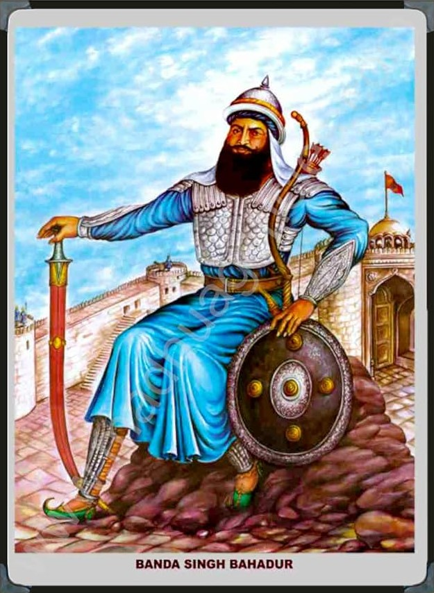

Marks the beginning of systematic execution of 740 Sikh soldiers
After their surrender at the fort of Gurdas Nangal, Banda Singh Bahadur, the valiant Sikh General and his 740 soldiers were taken to Delhi. From Mar. 5 through Mar. 11, these soldiers along with Banda Bahadur were executed in groups of 100. They were given the option to adopt Islam and escape execution. However, each one of these soldiers refused the offer and instead willingly accepted shahadet with unflinching faith and fortitude.
5 March brings together six moments of Sikh history, from 1716 to 1971. The main event of the day is from 1716: Marks the beginning of systematic execution of 740 Sikh soldiers. Together they span six periods, from Banda Singh Bahadur (1709–1716) to From the Anandpur Sahib Resolution to 1984 (1967–1984). People, places and movements connected with this day include Baba Banda Singh Bahadur, Delhi, Amritsar and Anandpur Sahib.

Also on this day
- 1748Khalsa Panth gathered at Anandpur Sahib for Holla Mehla observations and resolved to gather in Amritsar for Vaisakhi celebrations
- 1892The foundation stone for Khalsa College, a Shiromani education institution for Sikhs, was laid in Amritsar by J.B. Loyal Prof. Gurmukh Singh was instrumental its establishment after more than a decade of tireless efforts. The College Council was controlled by its Vice-President Sit Attar Singh Bhadaur with Jawahar Singh serving as General Secretary.
- 1921Gurudwara Sach Khand (Chuharkana) Sahib was forcibly taken over and brought under the control of SGPC
- 1955Punjabi Suba Conference was held at Patiala
- 1971Elections to Indian Lower House were held Akali Dal won 1 of the 13 Punjab seats.
Historical background
Banda Singh Bahadur (1709–1716)
Sent north by Guru Gobind Singh Ji, Banda Singh Bahadur led a Sikh uprising that captured Samana and, in 1710, Sirhind, ending the rule of Wazir Khan. He set up Sikh rule from Mukhlisgarh (Lohgarh), issued coins in the name of the Gurus and abolished the zamindari system in the areas he held, before being besieged at Gurdas Nangal and executed in Delhi in 1716.
On this day in this period: 1716 Marks the beginning of systematic execution of 740 Sikh soldiers.
Persecution, the Dal Khalsa and Abdali's invasions (1717–1764)
After Banda Singh's death the Mughal governors of Lahore, notably Zakariya Khan and Mir Mannu, put prices on Sikh heads, and many Sikhs, such as Bhai Mani Singh and Bhai Taru Singh, were executed. The Sikhs organised in jathas, united as the Dal Khalsa in 1748 and resisted the repeated invasions of Ahmad Shah Abdali, who killed thousands of Sikhs in the Vadda Ghallughara of 1762 and blew up Sri Harmandir Sahib, which the Sikhs rebuilt.
On this day in this period: 1748 Khalsa Panth gathered at Anandpur Sahib for Holla Mehla observations and resolved to….
Colonial Punjab and the Singh Sabha revival (1850–1919)
Under British rule Sikhs were recruited in large numbers into the army while new reform movements arose: the Namdhari (Kuka) movement, the Singh Sabha movement founded at Amritsar in 1873, the Chief Khalsa Diwan (1902), Khalsa College and the Anand Marriage Act (1909). The period ended with the Ghadar movement, the Komagata Maru episode (1914) and the Jallianwala Bagh massacre of 13 April 1919.
On this day in this period: 1892 The foundation stone for Khalsa College, a Shiromani education institution for Sikhs, was….
The Gurdwara Reform (Akali) movement (1920–1925)
Sikhs organised the Shiromani Gurdwara Parbandhak Committee (November 1920) and the Shiromani Akali Dal (December 1920) to free historic gurdwaras from hereditary mahants backed by the government. Through non-violent morchas, including Nankana Sahib (1921), the keys agitation (1921–22), Guru ka Bagh (1922) and Jaito (1923–25), and alongside the militant Babbar Akali movement, the campaign led to the Sikh Gurdwaras Act of 1925.
On this day in this period: 1921 Gurudwara Sach Khand (Chuharkana) Sahib was forcibly taken over and brought under the….
The Punjabi Suba movement (1948–1966)
In independent India the Akali Dal campaigned for a Punjabi-speaking state, the Punjabi Suba, through repeated morchas led by Master Tara Singh and Sant Fateh Singh. The demand was met with the reorganisation of Punjab on 1 November 1966, which created present-day Punjab, Haryana and transferred hill areas to Himachal Pradesh.
On this day in this period: 1955 Punjabi Suba Conference was held at Patiala.
From the Anandpur Sahib Resolution to 1984 (1967–1984)
The Akali Dal adopted the Anandpur Sahib Resolution in 1973 and launched the Dharam Yudh Morcha in 1982 over river waters, Chandigarh and greater state autonomy. Tensions culminated in Operation Blue Star, the Indian Army's assault on the Darbar Sahib complex in June 1984, the assassination of Prime Minister Indira Gandhi on 31 October 1984 and the anti-Sikh violence in Delhi and elsewhere that followed.
On this day in this period: 1971 Elections to Indian Lower House were held.
People and places of this day
Baba Banda Singh Bahadur
The general (1670–1716) sent to Punjab by Guru Gobind Singh Ji. He captured Sirhind in 1710, set up the first Sikh rule with its capital at Lohgarh and ended the zamindari system in the lands he held, before being captured at Gurdas Nangal and executed in Delhi in 1716.
Read more → · Mentioned on 27 other days of the year

Delhi
The Mughal capital, where Guru Har Krishan Ji died (Gurdwara Bangla Sahib), Guru Tegh Bahadur Ji was executed (Gurdwara Sis Ganj Sahib) and Banda Singh Bahadur was put to death in 1716. Baghel Singh's forces entered the city in 1783 and marked its Sikh sites.
Read more → · Mentioned on 36 other days of the year

Amritsar
The city founded by Guru Ram Das Ji around the sacred pool of Amritsar. As the home of Sri Harmandir Sahib and the Akal Takht it has been the spiritual and political centre of the Sikhs for four centuries.
Read more → · Mentioned on 69 other days of the year
Anandpur Sahib
The town founded by Guru Tegh Bahadur Ji in 1665 as Chak Nanaki, where Guru Gobind Singh Ji created the Khalsa at Vaisakhi in 1699. Takht Sri Keshgarh Sahib stands there, and the town hosts Hola Mohalla every year.
Read more → · Mentioned on 13 other days of the year
The Khalsa Panth
The order of initiated Sikhs created by Guru Gobind Singh Ji at Anandpur Sahib on Vaisakhi 1699, when the Panj Pyare were the first to receive amrit. With the Guru Granth Sahib, the Khalsa Panth carries the Guru's authority.
Read more → · Mentioned on 7 other days of the year
The Singh Sabha movement
A Sikh revival movement begun with the founding of the Sri Guru Singh Sabha at Amritsar in 1873, followed by the Lahore Singh Sabha and the Khalsa Diwans. It promoted Sikh education, Punjabi literature and Sikh rites, led to Khalsa College, Amritsar (1892), the Chief Khalsa Diwan (1902) and the Anand Marriage Act (1909).
Mentioned on 21 other days of the year
The SGPC
The Shiromani Gurdwara Parbandhak Committee, formed at a meeting at the Akal Takht in November 1920 to manage historic gurdwaras, and given legal standing by the Sikh Gurdwaras Act of 1925. It manages Sri Harmandir Sahib and gurdwaras in Punjab, Himachal Pradesh and Chandigarh.
Mentioned on 53 other days of the year
The Punjabi Suba movement
The campaign of 1947–1966 for a Punjabi-speaking state, led by the Akali Dal under Master Tara Singh and Sant Fateh Singh, with mass morchas in 1955 and 1960–61. It succeeded when Punjab was reorganised on 1 November 1966; Darshan Singh Pheruman died on a fast in 1969 over the transfer of Chandigarh.
Mentioned on 23 other days of the year
Related days in Sikh history
Sources and further reading
- Event list: the Sikh calendar of historical dates published by AllAboutSikhs.com (Gateway to Sikhism).
- Ganda Singh, Life of Banda Singh Bahadur, Khalsa College, Amritsar, 1935.
- Hari Ram Gupta, History of the Sikhs, vols 2–4, Munshiram Manoharlal, 1978–1982.
- N. Gerald Barrier, The Sikhs and their Literature, Manohar, 1970; Harjot Oberoi, The Construction of Religious Boundaries, Oxford University Press, 1994.
- Mohinder Singh, The Akali Movement, Macmillan, 1978; Teja Singh, The Gurdwara Reform Movement and the Sikh Awakening, 1922.
- Ajit Singh Sarhadi, Punjabi Suba: The Story of the Struggle, Kapur, 1970.
- Mark Tully and Satish Jacob, Amritsar: Mrs Gandhi's Last Battle, Jonathan Cape, 1985; Harjinder Singh Dilgeer, The Akal Takht, Sikh University Press, 1980.
- Harbans Singh (ed.), The Encyclopaedia of Sikhism, 4 vols, Punjabi University, Patiala, 1992–1998.
Background sections are written by SikhsInIndia.com from the works listed. Dates in Sikh history sometimes differ between sources and between the Nanakshahi and older Bikrami calendars. To suggest a correction, write to sikhsinindia@gmail.com.